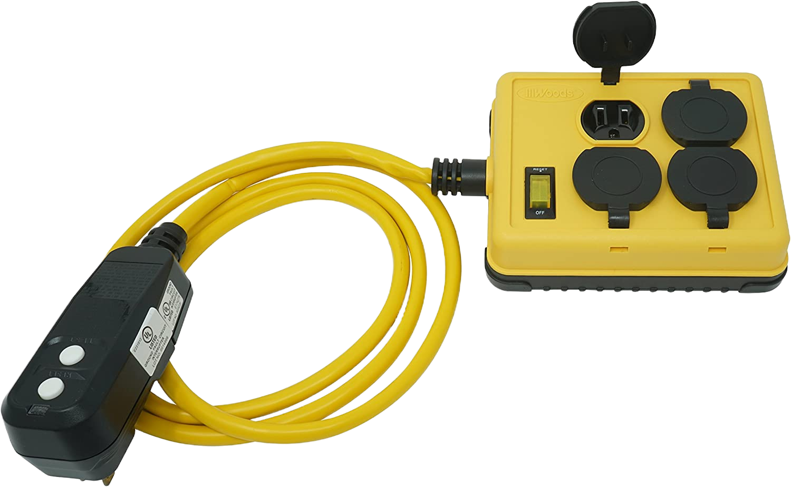

| Image | Classification |
|---|---|
 |
Sunsugar tomato seedsA hybrid cherry tomato variety that is known for it's sweet taste. Tomatoes are known to work well with hydroponics. This variety's size and harvest time make it very compatible with indoor growing.Approximate Value: $1-4 |

|
Mini rainbow pepper seedsMini sweet rainbow pepper plants produce adorable, miniature peppers in the colors of red, yellow, orange, brown, and green. This variety's size and harvest time make it very compatible with indoor growing.Approximate Value: $1-4 |
Seedling germination domeEssentially a plastic tray and lid designed to trap in humidity and used for seedling starting. This germination dome helps accelerate germination rates and speed by maintaining your growing medium moist for longer.Approximate Value: $40 |
|
Indoor LED grow lightsA category of artificial light specifically designed to help plants grow and thrive. They often come in a wide spectrum of colors that can be determined based on the needs of a particular crop. They are also more energy-efficient and produce less heat than other types of grow lights.Approximate Value: $22 |
|
DWC 5 gallon bucket grow systemsA pre-compiled kit for indoor growing using the deep water culture method of hydroponics. Good for beginners.Approximate Value: $50 |
|
Hydroton Leca clayA popular growing medium for indoor farming. Leca is an acronym for "lightweight expanded clay aggregate" pebbles.Approximate Value: $20-40 |
|
Dry Complete Combo Fertilizer KitA pre-compiled set of fertilizer ingredients including classic MasterBlend recipe for 5 gallons of nutrient solution.Approximate Value: $24 |
|
pH and TDS Meter comboA pH meter is a scientific instrument that measures the acidity and alkalinity of a water based solutions in pH (potential hydrogen), this can be used to ensure your nutrient solution remains at the ideal level. An electrical conductivity meter measures the electrical conductivity in a solution and can be used in a similar manner to monitor the amount of nutrients, salts or impurities in your water. This set includes both.Approximate Value: $12 |
|

|
General Hydroponics pH Control KitA set of base solution and acid solution that can be used to raise or lower the pH in your water reservoir as needed.Approximate Value: $19 |
portable USB fanA small portable fan that connects with a USB and is used to creates a current of air for cooling or ventilation. Good air circulation allows your plants to better transpire and absorb nutrients and also decreases humidity reducing the chances of mold and bacteria growth in your system. The size and practicality of this device makes it very convenient for a hydroponic system.Approximate Value: $22 |
|
Surge protection power stripA power strip gives you the ability to plug multiple devices into a single wall outlet. A surge protector is a type of power strip which is specifically designed to withstand a power surge and keep your electronics safe.Approximate Value: $19 |
|
|  | GFCI outlet adapterA very vital electrical safety device that stands for Ground Fault Circuit Interrupter. It is designed to inhibit electrical accidents by instantly blocking electric power in the event of a ground-fault. This is a necessary component of any operation that is running electrical appliances in close proximity to water and other fluids. Highly reduces the risk of fatal hazards.Approximate Value: $32 |
24-hour Mechanical timerA device used to automate the usage of most small home appliances and other electrical devices. You can conserve time, money, and energy by programming your mechanical timer to toggle indoor lighting and other appliances on and off at your desired schedule. Best used in hydroponics after determining the hours of daily light your plant will need to thrive.Approximate Value: $13 |
|
Digital thermometerA smart device used for measuring temperature and humidity. Can be used to track the conditions of your nutrient solution in your hydroponics system or of the water in your storage reservoir, ultimately aiding the objective of maintaining optimum conditions.Approximate Value: $13 |
|
Trellis plant supportA framework of light metal bars, mainly used to support and display climbing plants like tomatoes.Approximate Value: $12 |
|
Adjustable wire rackA heavy-duty double-tiered steel rack traditionally used for storing clothing and accessories. I've repurposed this by slightly modifying the assembly so that the position of the top wire deck and horizontal bracing are swapped. The wheels also allow for easy mobility as you're setting up your farm system.Approximate Value: $80 |
|
Moving furniture dollyA tool consisting of a flat base with four wheels used to transport heavy items from one location to the next. This can be useful for disposing of old water from your 5-gallon buckets and transferring new water if your water source is a considerably large distance away from your farm system.Approximate Value: $25 |